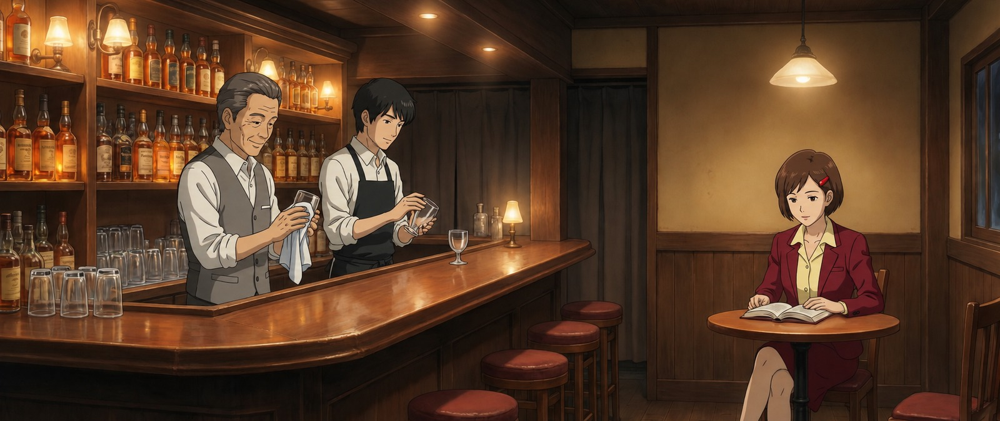
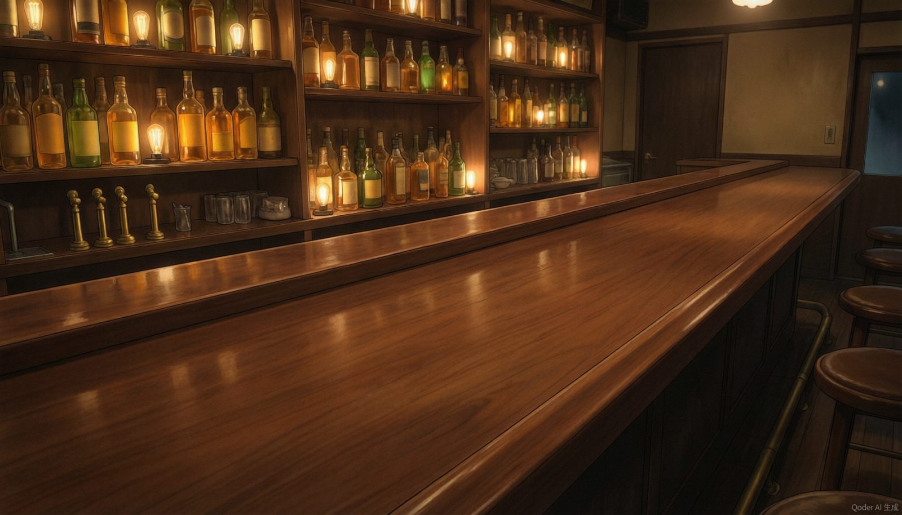
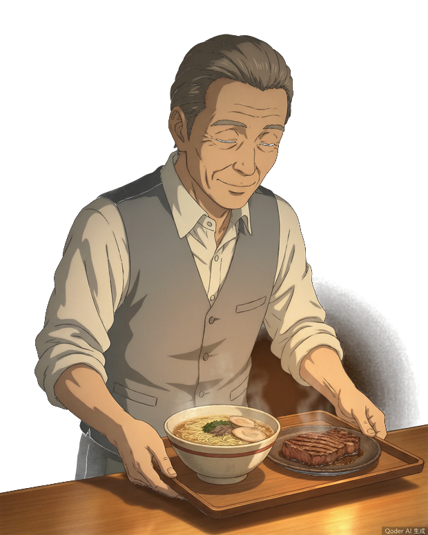
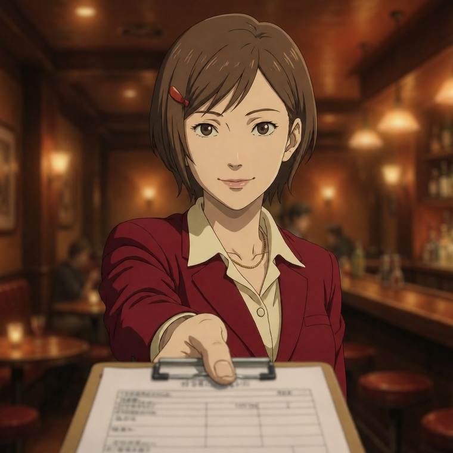

滑动鼠标，往前走一步▼
拉开椅子，坐下
今晚营业须知
TONIGHT※ 给第一次来的客人这里是 RADIO CLUB。一间只存在于网络上的酒吧。
没有实体地址，白天也找不到入口。但只要你夜里带着某件"想不明白的事"打开这个网址，灯就是亮着的。
本店不收现金。只收故事。你讲，我们听，然后替你把线头理清楚。
坐在吧台另一端的那位小姐是 梦侦探 · 萨弗兰。
她用 塔罗牌 和 精神分析 工作：前者负责把你没说出口的部分摆上桌，后者负责解释它为什么在那里。
她不说安慰的话，但每一句都负责。
你的吧台
YOUR COUNTER点过的都记在这里※ 点下的都先记在单上。等你和侦探聊起来，酒保会一次端上来，放在你手边。
服务菜单
MENU价格：一个故事本店约定
HOUSE RULES| 一 | 先点单，再聊天。把你的事写下来，她会认真读完每一个字。 |
| 二 | 酒保记得每一位常客。第二次来，他们会先开口打招呼。 |
| 三 | 电梯只到 17 层。上面的楼层今晚不开放——别担心，只是不开放。 |
| 四 | 打烊是次日 5:00。在那之前，你可以一直坐着，没人催你。 |
| 五 | 她说的话不一定中听，但一定负责。不中听的部分，可以反驳。 |
今日电梯
ELEVATOR现在所在
01F
※ 数字慢慢往上爬，是这家店的毛病。
电梯只到 17 层。
再往上的楼层，今晚不开放。
再往上的楼层，今晚不开放。